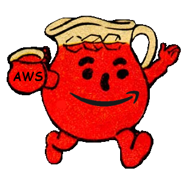
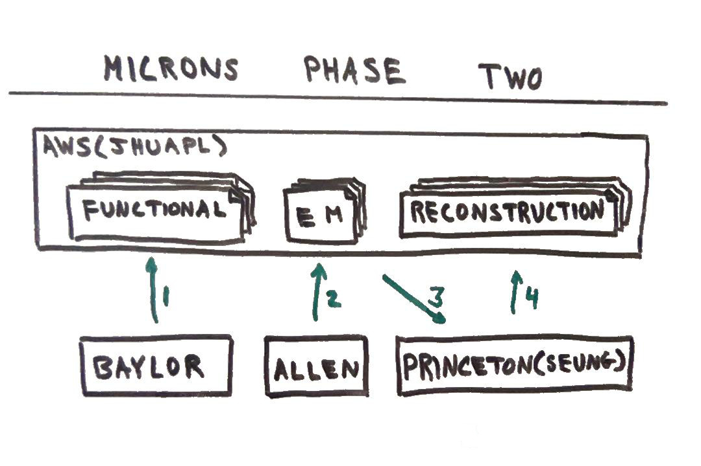
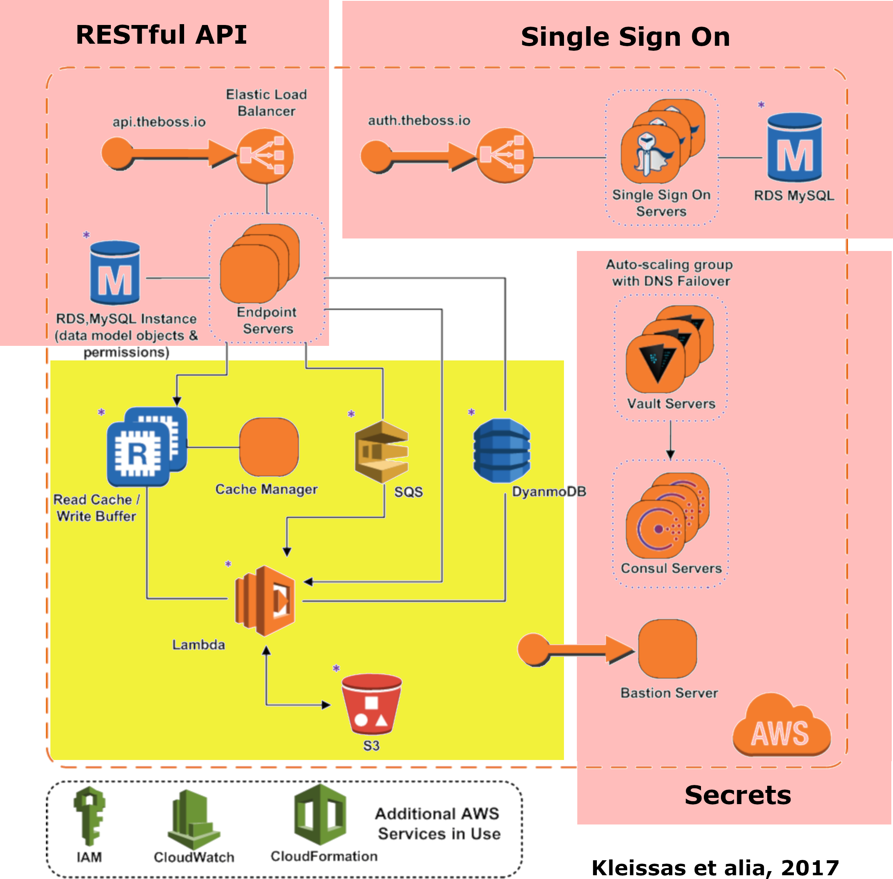
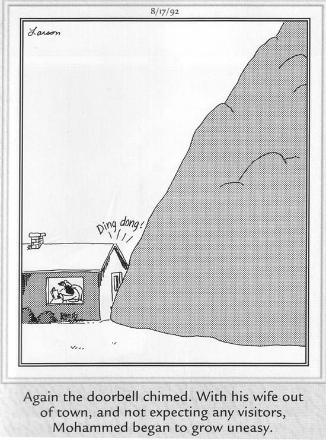
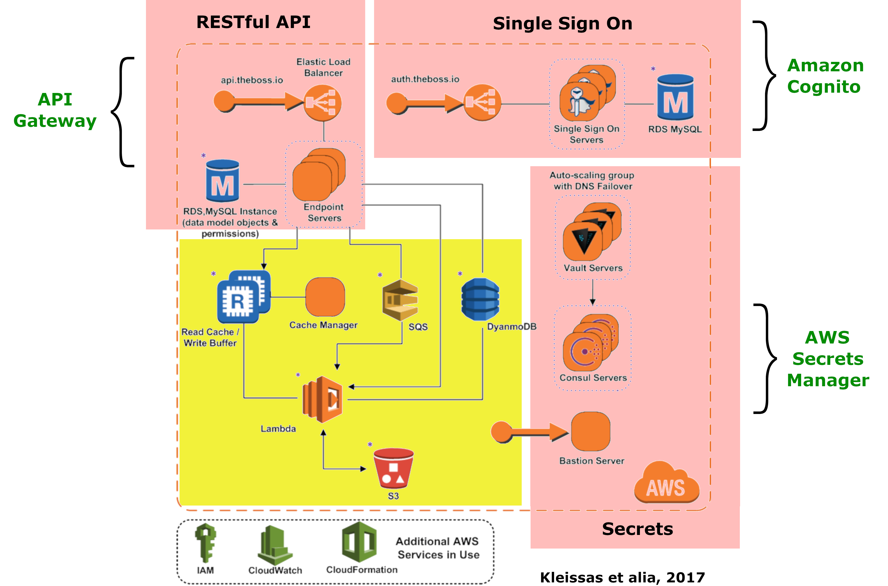
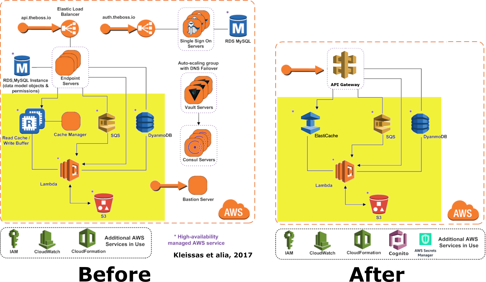
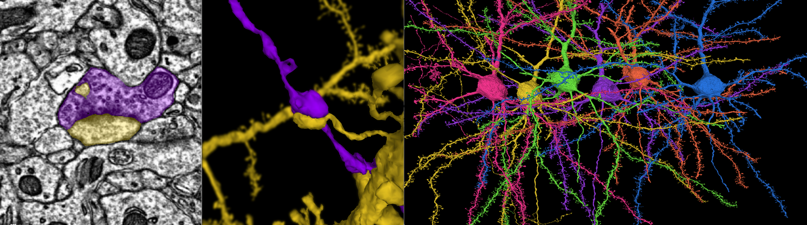
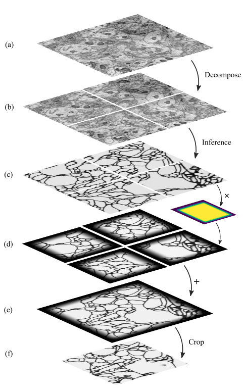
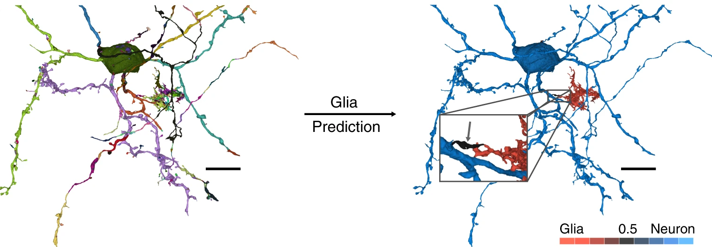
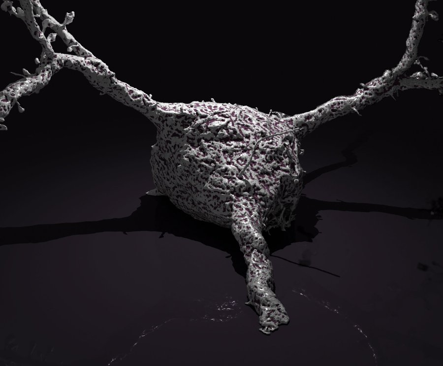

Cuboids Manifesto
| Author | John Tigue |
| Version | 2020-11-07-1 |
| License | CC0 1.0 |
1 Abstract
This document proposes refresh modifications and novel extentions to the bossDB volumentric database. The envisioned platform has been given the working title of Cuboids.
During the MICrONS program, the bossDB (a.k.a., "the Boss") code has proven to scale to petabytes of data. This is very impressive as it is unusual for a codebase to be so extremely stress tested in its initial deployment. In order to position the Boss to be the open source core backend repository for the next generation of neuroscientific experiments, the codebase should be streamlined for ease of administration and to address feedback from the original users.
The initial goal of the Cuboids project is an architectural update of bossDB to leverage the latest AWS serverless innovations thereby simplifying deployment and maintenance of the existing system, while maintaining the existing bossDB surface APIs. The subsequent goal is to use the streamlined bossDB as the repository component of a cloud service which can do more than just store and visualize data.
The resulting Cuboids platform is to be a "whole product" which recapitulates the multi-system architecture of the MICrONS project but with all tasks – storage, analysis, visualization, etcetera – performable within a Cuboids instance. The first process to be moved into Cuboids is the code used during MICrONS for reconstruction of neurons via image recognition machine learning inference. After that the system will be an agile platform for further innovations. Examples include inference by Google's Flood Filling Networks, training machine learning models, and classification by cell type.
2 Introduction
The bossDB is a volumetric database capable of storing petabytes of data generated from microscopic imaging of neurological tissue. Colloquially, bossDB is also known as "the Boss" and in this document both terms are interchangable.
Initial development of the Boss was funded via grants from IARPA under the MICrONS project. The resulting source code – spanning multiple repositories – is available under the Apache 2.0 open source license.
The modified bossDB codebase proposed herein is designed to be the repository component of a platform which has been given the working title of Cuboids. Cuboids builds atop existing work by doubling down on the current AWS lock-in of bossDB, in the interests of streamlining the architecture in order to make it easier to administer. This part of the proposal is simply "better, faster, cheaper" thinking which does not change the high-level feature set of the repository.
The original bossDB codebase evidences a valid and shrewd architectural style which values vendor neutral open source. Yet to deal with the sporatic, massive volume and velocity of data being throw off by electron microscopes, an AWS serverless engine was adopted. This worked well but resulted in a mixed architectural style which is more complex than currently necessary. Cuboids aims to resolve the complexity by going all-in on AWS lock-in by jettisoning any existing components which can be replaced by equivalent fully managed AWS services.
Beyond the aforementioned architectural refresh, Cuboids aims to build significant analysis functionality close around the repository. Given the current architecture of the Boss, image analysis has to be performed by separate external systems, requiring the transfer of mountains of data. Cuboids builds on the previous bossDB work such that analysis of the data within a bossDB repository can be performed close to where the data resides.
This functional expansion can be accomplished by shepparding the existing serverless boosted architecture towards a serverless-first design. In 2015, when work on the Boss was started, a serverless-first architecture simply could not be build because AWS has not yet built out enough serverless products. The term "serverless-first" refers in part to the minimizing of self-managed services. More importantly, the balance is to swing from the current Boss architecture of a non-serverless frame with a serverless engine to one which builds out from the serverless core and then adds on long running, self-managed compute instances only as necessited by technical or financial concerns.
Peta-scale datasets are unlikely to ever migrate from where they are initially reposited. Recognizing this and the fact that the existing AWS-only codebase is currently managing petabytes of data in AWS, this manifesto accepts the reality of single vendor lock-in with regards to cloud provider platform and so drinks deeply from the AWS Kool-Aid pitcher by moving towards less servers and more fully managed services.

3 The history of the Boss
The Boss was written to be the repository for data generated by the MICrONS program. The data consists of videos, static images, and the results of machine learning based analysis of the movies and images.
The funding came out of IARPA. The code is open source and licensed in a commercially friendly manner, that is under the Apache 2.0 license.
3.1 The MICrONS program
In the interest of brevity, MICrONS is expounded upon only minimally in this document. See the companion document, the MICrONS Program Primer, for more details.
Tersely, the Boss – created by JHU/APL – was used in both Phase One and Phase Two of MICrONS. Phase One was a "small" trail run of the main task which occurred in Phase Two. The resulting EM image sets were 40 terabyte versus 2.5 petabyte, respectively, a ratio of 1:62. Phase One involved three separate groups of organizations competitively trying out to be awarded the grant for the Phase Two work. The winning team which moved on to Phase Two consisted of The Allen Institute, the Seung Lab at Princeton University, and the Tolias Lab at Baylor College of Medicine in Houston, Texas.
The technical architecture of the data system of the MICrONS project centers around the Boss. The design enabled coordination across the organizations participating in MICrONS. The following diagram illustrates part of the flow of data in and out of the Boss repository during Phase Two.

Four organization each focused on their particular area of expertise:
- JHU/APL wrote the Boss repository code and supporting tools
- Baylor University performed functional imaging experiments on a live mouse
- The Allen Institute electron microscope (EM) scanned that mouse's brain
- The Seung Lab wrote the machine learning code to reconstruct the imaged neurons
The functional calcium imaging generated many 4D movies of neural activities taken while the mouse was performing in various learning experiments. Next the structural imaging involved scanning a cubic millimeter of the mouse's brain via a industrialized EM workflow which generated 2.5 petabyte of TIFF image files. (The distinction between structural imaging and functional imaging is analogous to that between the map of a road network and recordings of traffic over the network, respectively.) Finally, the reconstruction work involved downloading the EM images and mining them via custom built machine learning algorithms – deep CNNs navigating through massive volumes of 3D data to recognize neurons down to indiviual synapses. (Not shown here is the work of coregistering the functional calcium videos to the EM structural data.)
Click on the following image to see a video which demonstrates what such reconstruction algorithms do. The colored map on the 2D plane slice is the output of a segmentation algorithm, an intermediate product of the full reconstruction process:
Via Improving Connectomics by an Order of Magnitude, Google AI Blog, 2018-07
3.2 The Boss technical architecture
The docs describe the Boss as:
The Boss is a large-scale spatial database service for storing multi-dimensional neuroimaging data and associated voxel annotations that was created for the IARPA MICrONS program. The database is designed to support three dimensional, multi-channel, and time series source data and annotations at various bit depths. The Boss was designed to live in the cloud and has a tiered storage architecture to balance cost and performance, auto-scaling capabilities, and a high-bandwidth ingest process.
In its current form the Boss architecture can be considered a hybrid of two styles. The foundational frame consists of non-serverless, platform neutral, open source machinery originally assembled for the NeuroData project. The JHU/APL developers were already familiar with these solid technologies and it made sense to reapply them in the Boss codebase. Within that frame was built out a turbo boosted engine of serverless tech. These decisions were made for valid reasons back in 2015 and time has shown the resulting codebase has served its original purpose well.
The following diagram is from the original bossDB pre-print. In order to break it down, the yellow and red backgound boxes with labels in bold have been added as annotations. The yellow box highlights the serverless core of the architecture. The red boxes define three non-serverless sub-systems which were built out of platform neutral, open source machinery. The colors were chosen to correspond to the argument presented in later sections: keep the yellow, jettison the red.

The core engine of BossDB is the spatial database, repo name jhuapl-boss/spdb. This service features the usual suspects found in AWS severless machines: Lambda, S3, SQS, DynamoDB, Step Functions, etc.
The other three sub-systems in red are proven non-serverless, open source technologies: Bastion, Vault, Keycloak, etc.
- The upper left red zone is the REST interface
- The Single Sign-on subsystem is in the upper right red zone
- The lower reg zone can be replace with AWS Secrets Manager
Those three sub-systems are not particularly interesting, domain specific machinery. Nonetheless, the functionality they provide amounts to table stakes for a modern, mature application. In AWS marketing terminology they are "undifferentiated heavy lifting" support machinery. JHU/APL simply reapplied solid codebases they were already familiar with while getting on with the task of building a petascale volumetric spatial database.
Sundry adopted AWS services are enumerated in the bottom dash boxed region. These services are applicable to both serverless and container based architectures and will be kept in Cuboids.
Note: the hybrid nature of the Boss architecture is not a result of the multi-team social structure of the MICrONS program. On the other hand, the fact that the original Boss cannot perform image recognition internally is indeed a reflection of the social structure. The decisions which lead to this state can be seen as a wisely chosen limiting of the scope of development for the initial Boss. But, as will be argued herein, it is time to change that.
From an external perspective, the resulting architectural structure is still sound. Cuboids will maintain the existing Boss HTTP APIs to the repository component and only modify its internal structure. Thereby analysis tools written atop Cuboids will be able to interface with multiple bossDB repositories, including the one wherein the MICrONS data resides.
4 Realtechnik of cloud architecting
Significant but non-core parts of the bossDB codebase (the red boxes in the previous diagram) are simply deployments of existing open source components which just so happens to be platform neutral, non-serverless tech. Vendor neutrality is a good thing but Cuboids consciously jettisons that feature in the interests of accellerating innovation via improved developer velocity and reduced devops workload. Perfectly good open-source component of the Boss will be replaced with equivalent AWS fully managed services.
This document is entitled "The Cuboids Manifesto" in reference to the "manifesto" documents that circulate within the Swift programming community (and it is a bit long). This type of document serves the purpose of introducing a proposal which is larger in scope than a single, small, specific proposal. This document follows that lighthearted nomenclature, in order to highlight that there is a realtechnik "philosophy" driving the decisions behind what is proposed herein.
There are two main assumptions to the argument:
- The original Boss codebase can only be deployed on AWS
- Very large datasets (in particular, the MICrONS data on AWS) are rather immobile
As to the former assumption, normally it is ideal if open source code is platform vendor neutral. Yet falling short of such ideals there are still benefits to the open source way, for example, innovation shared throughout a community of users. The Boss, given its AWS serverless engine, is very much not vendor neutral. For example, the Boss makes use of AWS Step Functions. Unfortunately there is currently no equivalent abstraction available which works on other cloud platforms (which seems odd but c'est la vie).
Given the AWS technologies already adopted in the bossDB codebase, Cuboids accepts and runs with the reality of AWS lock-in, probably in perpetuity. It is arguably a bit perverse for open source to be tuned up just for a single commercial cloud platform, but the hypothesis herein is that by doing so it will make it much easier for other organizations to deploy BossDB, thereby speeding up the diffusion of innovation.
The latter assumption acknowledges the inertia of peta-scale datasets. The MICrONS data is already in AWS S3. Other smaller datasets are also accreting in Boss deploys on AWS. So code which analyzes these datasets yet only runs on AWS is not a major negative. Of course, this too is gradually leading to more AWS lock in. Other cloud vendors are missing out on an emerging industry sector. Obviously it is not the biggest sector in terms of users but this is heading towards exo-scale datasets which is not insignificant.
Datasets on such a scale as that of the MICrONS data form a gravitational well inducing system architectures wherein data processing happens as close to the data as possible; it is desirable to minimise massive data trasfers. Although the existing bossDB APIs can be used to fetch raw data for analysis on systems external to the Boss, Cuboids intends to extend the Boss platform such that data analysis can be performed within the system. Quoting Francis Bacon:
Mahomet cald the Hill to come to him. And when the Hill stood still, he was neuer a whit abashed, but said; If the Hill will not come to Mahomet, Mahomet wil go to the hil. [sic]

The two above assumptions drive the logic of this document. This proposal argues to dive headlong down the slippery slope of AWS lock-in. This recommended direction may seem counterintuitive and even distasteful given the platform vendor neutral, open source ecosystem out of which the Boss grew.
Nonetheless, although the technological lead which AWS currently enjoys over the other cloud platform vendors is slipping, it does not appear that a cross-platform serverless version of bossDB is possible at this time, given the state of those cloud platform offerings competing with AWS (e.g. a lack of an AWS Step Functions equivalent for Google Cloud Platform).
Therefore, it is argued herein that the mixed architecture is retarding the diffusion of innovation, especially with regards to that theory's criteria of "complexity" and "trialability." So, perhaps we should just accept that this codebase will always be locked in to AWS and drink their Kool Aid in order to lighten the load.
As a reality check on this AWS serverless enthusiasm, there is a decent 2020-10 article, Why the Serverless Revolution Has Stalled, which enumerates situations where serverless is not yet living up to its promise. The Boss as a use case of serverless technology actually passes almost all the checkpoints enumerated in that article: for example, all the code is written in Python (i.e. a language well supported by AWS Lambda), it is greenfield, and the entire app was explicitly designed to run on a cloud platform from the get go. The single concern raised which the Boss is guilty of vendor lock-in but as argued herein, that is acknowledged and accepted.
So, the Cuboids code will be very locked to AWS as the vendor platform, which is a rather ironic form of open source. It is assumed that these changes to bossDB are significantly disruptive enough that PRs back to bossDB would not be worth the hassle to the repo's maintainers. But maybe some chuncks of code will go upstream, say, the heaviside replacement code. Perhaps upstream would be interested in the Step Function that works with chunkflow for neuron reconstruction; being novel that part would not involve major changes to existing code but that could be seen as feature creap. Regardless, the Cuboids codebase will remain open source, intentionally maintaining the Apache 2.0 license is the hopes of building an community around the codebase.
5 Architectural updates
The first stage of Cuboids development is to be an architectural refresh of the existing Boss codebase.
The bossDB codebase was started in 2015, which was early days for AWS serverless, nevermind using such young technology to scale to petabytes of data. In the interim, Lambda has become more sophisticated and AWS has gotten around to providing more fully managed services such as API Gateway, Cognito, and AWS Secrets Manager. The life of a Boss administrator could involve less hassles if the Boss were to adopt those innovations.
5.1 Overview
The architectural refresh is motivated by abstract goals and those resolve to a set of specific coding tasks. The abstract goals are to effect the following changes.
| Before | After |
|---|---|
| Hybrid architecture | Serverless first architecture |
| Some self-managed services | More fully managed services |
| Complex deployment | Simplified deployment |
The main goal of the architectural refresh is to reduce the complexity resulting from the hybrid architecture by moving towards a serverless-first architecture. Most of the specific coding tasks revolve around replacing self-managed sub-systems with equivalent fully managed AWS services. Simply keeping the current serverless core architecture but rewriting those components which can be replaced with equivalent AWS service will make bossDB easier to deploy and maintain.
Additionally, another potential benefit of removing self-managed services is that serverless costs are variable while self-magaged services with constantly running servers have higher fixed costs. Minimizing self-managed services can lead to lower costs, depending on use case.
Note that the goals include not significantly modifying the features of the Boss repository. Specifically, the surface RESTful APIs are to maintain backward compatibility. Any distinctly novel functionality to be introduced in Cuboids which is not present in the Boss codebase will be constructed outside the Boss repository component.
The refurbishments to be performed can be illustrates by further marking up the Boss high level architecture diagram from earlier. These annotations are color coded according to a stop light red-yellow-green color scheme. The red boxes are to be replace with the AWS services named in green. The red boxes are labeled by their roles in black bold text. Those same roles are to be resatisfied with the named (in green) AWS fully managed services.

In the above diagram, the parts of the architecture to be refurbished are:
- The RESTful interface machinery: to be handled by Amazon API Gateway
- The Single sign on machinery: to be migrated to AWS Cognito
- The secrets keeping machinery: to be replaces with AWS Secrets Manager
- The Redis cache: to be managed by Amazon ElastiCache
These sub-systems to be modified are simply necessary support infrastructure – undifferentiated, off-the-shelf app infrastructure, not the bespoke domain specific innovations contained in the core serverless engine of the spatial database. The code to be replaced is perfectly good code; that is proven platform independent, scalable open source. But as pre-serverless tech it requires self management and related infrastructures.
Besides the above mentioned machinery refurbishments there is also a tooling library, heaviside, which is to be replaced with AWS equivalent tooling, that is, the Python AWS CDK. Heaviside is another instance of JHU/APL banging out a wheel before AWS got around to recreating an equivalent. Heaviside does its job just fine but the goal here is to set the Boss up for the next ten years. While in Rome do as the Romans, and in AWS the CDK is the way to do what heaviside does. AWS sees their CDKs as important tools. Might as well benefit from the freely available tooling supported by AWS developer resource.
In the following before-and-after juxtaposition diagram, the image on the left is the raw image taken from the bossDB preprint, with the serverless core highlighted in yellow. The image on the right is the envisioned streamlined and serverless-first Boss. Notice how the diagram reduces to a completely generic serverless architecture. That clearly illustrates the argument being made here but reduces the diagram to where it contains no specific detail. Going into such detail is beyond the scope of this document, which is already overlong as is.

5.2 Development roadmap
The very first development work will be to simply stand up a Boss instance using the existing codebase. That will be useful for testing backward compatibility. Surely the deployment experience will cause refinements to what is proposed in this document. That deployment experience will be documented. Perhaps logging that will prove useful to other adminstrators of Boss deploys.
The root reason for going through all the following code refresh hassles (without gaining any new functionality) is that the Boss has proven itself. So, the more important reason for standing up a Boss instance is to maintain continuity of value. An alternative development roadmap could just take the Boss as proof that serverless can scale well to the task at hand but conclude that the code is so bit rotted that simply starting a new codebase from scratch is the easiest way forward.
This manifesto is not going for a codebase restart. Cuboids is going for evolution, not revolution. Benefitting from the well formed architecture of the Boss, these proposed changes have been broken out into discrete tasks so that the envisioned benefits can be accummulated in stages. This is to reduce the risk of the whole Cuboids project going off into the weeds. So, development can proceed as follows: refurbish a single component, test to ensure the whole system still works, move on to the next task.
One way to test for compatibility is to have one test client which can work with both the existing Boss and Cuboids simply by changing the end-point URL. The existing Boss integration test suites should prove useful.
The following tasks are broken out into isolatable chucks of work. Each is to be tracked as a GitHub Issues Project. The Projects are to be worked on individually sequentially so that overall progress can be broken out to milestones, testable along the way via integration tests.
5.3 RESTful API
In the color coded architectural diagram, the RESTful API subsystem is in the upper left red zone. The code for that Boss API machinery and schema is currently in the repository named jhuapl-boss/boss. That machinery is to be replaced with Amazon API Gateway.
Currently, there is a cluster using nginx to run some Python. That
Python is a django app using rest_framework to handle REST API calls
coming in over the public network. Cuboids can come in and out,
optionally being compressed to blosc, numpy, or npygz via HTTP content
negotiation (see parsers.py).
API Gateway was originally created to provide HTTP interfaces to AWS serverless apps. Since the Boss core is serverless it is only natural to use API Gateway to implement the REST interface. This is an instance of an undifferentiated component which the Boss needed but for which there was no available AWS service at the time of initial development of the Boss. (Actually it looks like API Gateway had just been released at the time but was passed over. Perhaps there was a design choice of localizing the platform dependend code to specific repositories in the hope of someday porting the code to other cloud platforms.)
There is some domain specific code in jhuapl-boss/boss, such as HTTP content negotiation for cuboids. Such Python logic in the repo will be migrated to Lambdas, but the django on nginx foundation is to be replaced by API Gateway.
It is a goal to maintain backwards compatibility of the interface with the original Boss APIs. This refurbishment is purely about simplyfying the machinery which implements the interface, not about changing the user experience of the interface.
5.4 Single sign-on
Referring to the color coded architecture diagram again, the upper right red zone is the single sign-on (SSO) service. Notice the two domains in the diagram: api.theboss.io and auth.theboss.io. Quoting from the Boss pre-print:
Our identity provider server intentionally runs independently from the rest of bossDB system, forcing the bossDB API to authenticate just like any other SSO integrated tool or application, and making future federation with other data archives or authentication systems easy.
Cuboids will maintain this architectural feature, that is, auth as a separate microservice. This also means that this work can be done completely independently of the other refurbishment tasks in this section of the manifesto.
Returning to the Boss pre-print:
We use the open source software package Keycloak as an identity provider to manage users and roles. We created a Django OpenID Connect plugin to simplify the integration of services with the SSO provider… The Keycloak server is deployed in an auto-scaling group that sits behind an Elastic Load Balancer.
In other words, another cluster of servers being self-managed. This machinery can be replaced by Cognito and some support Lambdas. The plan is to keep the same APIs but, in Cuboids, behind the Boss SSO APIs will be API Gateway reading from, say, a Swagger file that mimics the Boss auth APIs, and some Lambdas that are essentially a wrapper for AWS Cognito API method calls.
This work can be done in stages. Could start with the existing Keycloak based SSO code and do federation with AWS SAML. Any API Gateway based auth can treat the Boss SSO Keycloak service as a third party identity provider (e.g., Keycloak adapter for AWS Lambda). Perhaps such code exists already somewhere. Perhaps modify or use the code for boss-oidc.
In the docs for the Boss Auth REST APIs, The Boss single sign on (SSO) service has about 16 methods, comprising the usual suspects of sign on APIs: CRUD operations for users, groups, resources, and permissions. For example, "List User" via https://api.theboss.io/v1/sso/user/:user_name
Note, existing OIDC Indentity Providers (such as the one at auth.bossdb.io with existing MICrONS data users) can be added to a Cognito User Pool. This means Cuboids can recognize the existing auth.bossdb.io users and can create Cognito user roles for their activity while in Cuboids, say, running analysis on data in the MICrONS Boss repository.
5.5 Secrets
The lower red zone can be replace with AWS Secrets Manager. The existing machinery is more auto-scaling groups of EC2 instances:
- Vault servers maintain secrets
- Vault nodes store their encrypted info in Consul key/value store
- Looks like Consul was replaced with DynamoDB
This should be a pretty straightforward migration from two
self-managed services to an equivalent AWS fully managed
service. There is a bespoke chk_vault admin Lambda, the sort of thing
which can be jettisoned and replaced with AWS Console dashboardery.
5.6 Cache machinery
The above tasks involve migrating generice, support infrastructure sub-systems from self-managed code to fully managed AWS services. Those sub-systems are not part of the core serverless engine. In contrast, refurbishing the cache machinery is a modification to the serverless core i.e. the code in the spdb repository. Nonetheless this task is another instance of streamlining by migrating to fully managed services.
The Read/Write Cache is part of the core engine, enabling higher performance. It is a Redis cache running on a cluster of EC2 instances. A cluster of self-managed EC2 instances is not serverless. On the other hand, the cache is wired up to Lambdas which sync (read and write) the data in the Redis in-memory cache with the persistant store, S3. So if management of the Redis cluster were delegated to Amazon ElastiCache for Redis, that would make spbd a poster child for serverless. The cache manager is an EC2 instance. It will be removed and its functionality subsumed into ElastiCache.
There will still be a Redis cluster with EC2 instances containing the in-memory data but that will be autoscaling and fully managed by ElastiCache. The goal is for any Redis machinery to be reduced to CloudFormations config of supporting services used in a serverless application.
AWS's variant of Redis provides integration with other AWS services such as Amazon EC2, Amazon CloudWatch, AWS CloudTrail, and Amazon SNS. Such integrations can be useful if going all-in on building out for AWS only.
The main code is in the jhuapl-boss/spdb repo. The most significant files is rediskvio.py which is all about using Redis as a cache for cuboids. There is also CacheStateDB class: "to implement the Boss cache state database and associated functionality…Database is a redis instance." The code that generates the CloudFormation for the Redis cache machinery is in the boss-manage repo, in cloudformation/configs/redis.py.
[ TODO: The diagram seems to imply current Redis R/W cache is fully managed, with the asterix. Is it, really? ]
5.7 Infrastructure as code tooling
Finally, there is another technology of the Boss which will be replace with an equivalent AWS technology. Unlike the above tasks this is not about services. Rather, JHU/APL's developer tool, Heaviside, it to be replaced with AWS CDK.
The core of the Boss is a sophisticated serverless application which relies heavily on AWS StepFunctions. Actually writing StepFunctions in the Amazon States Language – raw JSON – is an ugly hassle. To address this inconvenience, JHU/APL created an infrastructure-as-code tool they call Heaviside, a "Python library and DSL for working with AWS StepFunctions."
Heaviside is another example of JHU/APL (specifically, Derek Pryor) inventing tech needed in order to sanely build AWS serverless applications, in this case apps involving StepFunctions. Eventually AWS got around to releasing their own equivalent technology, AWS CDK.
So, a decision presents itself: continue to build the core high level logic of Boss internal processes atop a one-off tooling library by a small team or take the hit of rewriting the existing Heaviside code, porting it to the now dominant standard tool, AWS CDK. Migrating to AWS CDK would position the Boss to reap the benefits of working with a more mature implementation of a tech, one which is currently diffused throughout a much larger community of developers and with the weight of AWS support behind it.
The decision for Cuboids is to replace all existing Heaviside code with equivalent CDK code, then move forward atop the standard AWS technology. AWS CDK is available for multiple programming languages. The Boss is written in Python so it is only logical to use the Python AWS CDK.
In the boss-manage repository, 18 StepFunctions already exist, written to be "compiled" by Heaviside. These are to be rewritten to use the standard tool for such things: AWS CDK.
 Via Seung Lab: grayscale 2D images to colored 3D cuboid
6 Architectural extensions
The previous section enumerated various architectural updates which together will position a streamlined Boss for higher diffusion of innovation. Those refurbishments add almost no new functionality to the Boss. In contrast, this section discusses novel machinery to be deployed alongside a Boss repository. The conglomerate is to be called Cuboids.
As argued above, for peta-scale datasets, it is desirable for the compute of analysis to happen as close to the data as possible. Cuboids does that by inserting the compute into the same system as the core Boss repository, similar to how SQL databases have stored procedures.
The existing eighteen Step Functions and various Lambdas currently in the Boss can be seen as a library of code containing serverless components which perform fundimental CRUD and visualization operations on cuboids in a Boss repository, and do so utilizing a scalable in-memory cache. Analysis programs which run close to the data can be built atop those base operators. The Boss Downsampler is the poster child program written atop the Boss libraries.
The platform is already there but it has not yet been exploited to the level where non-trivial data pipelines have been built atop it. Cuboids is laying the foundation for more interesting pipelines moving forward.
This section has two parts: first is an explanation of the design pattern, serverless-first, which will guide the construction of new components in Cuboids. Then the serverless-first design pattern is put to use to add neuron reconstruction machinery to Cuboids. Doing so will set Cuboids on a path to be more of a "whole product" for microscopy workflows rather than, as with the Boss, essentially a repository accessed by external analysis tools.
6.1 Serverless-first design pattern
The core design innovation is that the architecture is being refined and elaborated in a serverless-first fashion. This section explains what is meant by that.
Obviously from previous sections, part of the serverless-first mindset involves simply minimizing any self-managed infrastructure. Of course, one must keep an eye the costs. Serverless can be quite cost effective but when it comes to fully managed services (for serverless or not), sometimes AWS wants way too much money in return for simply removing a hassle.
Setting aside services, from a coder's perspective the main AWS service than enables serverless-first designs is Step Functions, which has already been adopted into the Boss machinery. There are already at least 18 Step Functions in the Boss codebase. For example, the Downsample service involves a Step Function.
From an external perspective, analysis programs can be built which call on the Boss REST APIs. For example, that is what happened during MICrONS. But from an internal perspective, programs are built as Step Functions which orchestrate Lambda and Docker container based components. (Optionally, a Step Function program can be exposed in an API Gateway hosted REST API.) Cuboids programs are built on the internal APIs i.e. the interfaces to the existing core Boss Lambdas and StepFunctions.
Consider the case of adding cuboid segmentation functionality. To the outside world the service will manifest as new methods added to the REST APIs. Inside AWS, The HTTP messages containing Boss REST requests will be handled by AWS API Gateway (APIGW) which will initiate a Step Function instance to run a segmentation job. Some states will be Lambdas; some states might be long runing Activities, say, an EC2 instance which runs Chunkflow processes.
Step Functions are programs – programs that just so happen to have explicitly defined state machines. Step Functions bring state to serverless apps which are based on the innately stateless AWS Lambda service. Any state which needs to bridges both serverless and non-serverless processes is maintained in a Step Function. The states – as Lambdas and Activities – are the program modules which get assembled into a Step Functions based program.
Note that "serverless-first" does not exclude non-serverless processes. Step Functions can orchestrate both types. Step Functions can invoke serverless Lambdas, and other non-serverless processes can interact with Step Functions as Activity workers performing Tasks. From a Step Function's perspective, the former are "pushed to" and the latter "pull from." This means that Step Functions based services can benefit from massively scalable serverless tech as implemented by AWS Lambdas yet also work with legacy code and/or processes which are too big or long running to be executed within AWS Lambda.
Another rarely mentioned valuable feature of the serverless-first design pattern is that it allows for safety valves. The goal of serverless-first is to build out as much as can be in a serverless fashion based on Lambdas, but failing that various non-serverless components can be added into a Step Function as needed. Same Step Function, but with some state transitions driven by EC2 instances acting as Task Activities, rather than all states being implemented as Lambdas.
At a certain level of traffic, for purely financial reasons is may be worth switching the compute from Lambda to EC2. For normal serverless applications, those sort of economics start to be financially worth considering when scale gets in the range of 10M monthly hits. But the Boss is not a normal serverless application. The Boss is not primarily benefitting from serverless similar to how a small start-up might. Sure, low fixed costs are nice but the core value of serverless for the Boss is its ability to scale massively to the demands of large neurscience experiments.
From the Boss codebase, it is not obvious from that Step Functions can orchestrate both serverless and server-based compute. The Boss has lots of StepFunctions but they deal primarily with Lambdas, not long running processes as task Activities.
Following the serverless-first design pattern, Cuboids will continue to build more Step Functions based programs that run within the platform. Any new Step Functions based code will not use Heaviside, rather it will be written using the Python AWS CDK. (Note: that does not mean that de-Heavisiding the codebase is a prerequisite to such novel processes. CDK can live peacibly alongside Heaviside.)
6.2 Reconstruction: serverless CNN inference
The first major functional extension to be added to Cuboids is reconstrution. The goal is to recapitulate part of the work done by the Seung Lab for the MICrONS program: neuron cell reconstruction via CNNs. The tool chosen to base this work on is Seung Lab's Chunkflow. The novel part is that Chunkflow will need to be deployed in a serverless friendly manner.
The Seung Lab
The Seung Lab at Princeton is one of (if not the) best places for research applying CNNs to connectomics. It seems the lab has been at it since around 2006. The lab puts out a lot of software for connectomic data processing. Most of it is open source, and a good deal of that is licenced in a commerically friendly way (Apache, MIT, BSD, etc.).
Seung Lab did the reconstruction work for the MICrONS program. Chunkflow is their latest reconstruction application for running 3D CNNs at scale. It is currently unknown if Chunkflow was used during MICrONS.
Nonetheless, Chunkflow seems like a good place to start. The goal is to fold some Seung Lab code into Cuboids so that it has all the functionality needed to perform the MICrONS work. There is no reason not to use the latest and greatest. Cuboids is not a recreation to be put in a theoretical MICrONS museum.
CNN inference on Lambda
Before getting into the specifics of Chuckflow, it is worth discussing whether CNN code can be run on AWS Lambda at all. Currently infernence tasks can be run on Lambda. Actually training models is out of scope for this task but that may eventually be added to Cuboids.
In 2015, the limitations of AWS Lambda were too tight to accommodate many code packages which include machine learning libraries, say, scikit-learn. This is another valid reason why image processing was performed external to the Boss.
In the interim, AWS Lambda – the core technology of serverless – has matured such that larger Python codebases can now be deployed on Lambda. For example, scikit-learn can now be deployed on AWS Lambda. By packaging popular ML frameoworks as Lambda layers, Cuboids can be a serverless platform for 3D image recognition within a bossDB-based system.
The TensorFlow Lite inference runtime can be packaged for Lambda in under 25 MB. Currently, the Lambda deployment package size limit is 50 MB (zipped, for direct upload). A maximum of 5 layers is allowed but all 5 layers, unzipped, must fit in 250 MB.
Deploying PyTorch on AWS Lambda is also possible. There's even a package that does that, tochlambda:
torchlambda is a tool to deploy PyTorch models on Amazon's AWS Lambda using AWS SDK for C++ and custom C++ runtime.
Using static compilation of dependencies package size is only 30 Mb with all necessary dependencies
Serverless Chunkflow
This section introduces the idea of a serverless variant of Chunkflow, which is going by the name "serverless Chunkflow."
ChunkFlow (repo, pre-print) is all about running cuboids of microscopic imaging data through 3D CNNs. It comes out of the Seung Lab. The codebase was seemingly started in early 2018. The open source code is licensed under Apache 2.0.
Figure 3 from the Chunkflow pre-print does a good job of illustrating the work to be done. Notice that the figure simplifies things for the purposed of illustration: "Note that the process was illustrated in 2D for simplicity, and the actual processing is in 3D. This illustration used 2 × 2 patches, but actual processing have much larger number of patches in 3D."

ConvNet output patch normalization for overlapping regions. The raw image chunk (a) was decomposed to overlapping patches, and the patches was passed through a ConvNet to produce affinity map (b), the affinity map voxels were weighted according to the distance to boundary (d), the the weighted affinity map was recombined by summation to form a larger map (e), the larger map was then cropped to remove the weighted margin (f).
Chuckflow is a job systems for processing cuboids of data. DCNNs are run over small volumes (sub-cuboids) to perform ML based volume segmentation down to individual neurons, synapses, etc. There are masters (Chunk Generators) which initiate jobs and there are workers (Chunk Processors) who each do their little task. Their interaction is orchesrated by an AWS SQS queue.
The Generators and Processors can be any machines but on AWS are normally EC2 instances. Chuckflow can be configured to work with cheap preemptible EC2 instances purchased via spot pricing. This can reduce the compute cost down to about one third that of non-spot pricing.
Following the serverless-first design pattern, a goal of deploying Chunkflow in Cuboids it to use it in a serverless fashion. A serverless chunkflow will have low impedience mismatch with the rest of Boss system since everything in the core will be serverless.
Note that the core control bus in Chunkflow is built around AWS SQS. SQS is a common building block for serverless applications. There is nothing to prevent Lambdas from getting 3D CNN inference jobspecs from SQS and performing as chuckflow workers.
Cache
Another reason to select chunkflow is that it may well work well with the cuboids in-memory cache that the Boss has. Consider Chunkflow Issue #68: use geohash to schedule task respecting locality:
scheduling task respecting locality will enhance usage of caches.
- the queue server stored the finished locations and unfinished locations (grid index).
- worker send request with a current center of processed grid positions.
- the server will assign task according to the history of worker and respect the locality.
A good candidate is redis server with spatial indexes or geohash
For example, Flood Filling Networks (FFN), on average repeatedly visiting voxels about 75 times. During inference, FFNs are fed cuboids. They also tend to "walk" along cell membranes. This will look like a sequence of moves which keep asking for neighboring cuboids. As such, a serverless packaging of FFNs – which are TensorFlow based – might benefit nicely from the Boss Redis cache of cuboids.
Development roadmap
The easiest and first thing to do is stand up a stock Chunkflow deploy which reproduces the workflow they describe in the pre-print.
Then there are essentially two roles for computers in Chunkflow, Chuck Generators and Chunk Processors. It should be trivial to set up Lambdas to as Chuck Processors. That's when it becomes hybrid but not serverless-first.
There needs to be a way for reconstruction jobs to initiable. That will be implemented as a Step Funtion and exposed in the REST API.
Chunkflow does not currently work with TensorFlow, it seems: inferencer.py, L176. But it looks like there's structure to build on to extend the system to work with TensorFlow (see class PyTorch(PatchInferencerBase)). The chunkflow pre-print says "To add a new inference backend, we only need to implement 5D patch processing including batch size, number of channel and patch size." That comment in the pre-print seems to correspond to Chunkflow Issue #55 on GitHub: use pytorch/dask/tensorflow for parallel execution.
An intermediate development state would be to have an EC2 instance running the existing Chunk Generator code. From the Step Functions perspective, that instance would be wrapped as a Activity which polls Step Functions for reconstruction jobs to perform. Also, the ability to switch from Lambdas to EC2 instances may come in handy in some use cases if demand is high and steady.
The about would not qualify as serverless-first but could be a component in a StepFunction. So experiment first with Lambda chunkflow workers, then if that goes well figure out how to take the master code and shoehorn that into Lamba somehow. That would be the full serverless implementation achieved in stages.
The final state of development would be for to have a Lambda which is a Chunk Generator. This is how an external API could initiate a CNN inference job inside a Step Function.
This Chuckflow plan is a textbook illustration of how Step Functions can involve both Lamba and EC2 instances, demonstrating part of their value.
6.3 Further analysis services
This manifesto focuses on creating a single system which recapitulates the data processing that was done with multiple systems for the MICrONS program. Doing so serves as a marque proof of concept.
But that is hopefully only the beginning. The goal is for Cuboids to be an open source, cloud-native serverless, relatively easy to manage platform for 3D and 4D microscopy data storage and analysis.
The cache-accellerated serverless core should be able to handle massive workflows at high speed. The serverless-first Step Functions are a solid framework for building complex analysis pipelines.
There are obvious things that could be done with such a platform, for example:
- Other reconstruction algorithms
- Convolving some Vaa3D plug-ins over a volume
- COUNTLESS 3D for Vectorized 2x Downsampling of Labeled Volumes for
fast colored multi-resolution pyramid building (repo)
- Downsampling of the output of classifiers and reconstructors
- Color by label then downsample.
- Deconvolution of brightfield data
- Resolution pyramid building with an intensity threshold (filtering for brighfield)
- This way brightfield stacks can be view cleaned up
- Could make this a chunkflow based algorithm
- Or this could just happen client side?
- Distributed proof-reading via ChunkedGraph (think git for neural cell morphology proofreading)
The first item in the above list is where Google's Flood-Filling Networks should be used for reconstruction inference. Looks like FFN inference phase should be parallelizable. Multiple attention heads could individually fill separate neurites.
Finally, an example of a complex pipeline would be cell type classification via CMN See, Learning cellular morphology with neural networks. This too is Seung Lab work so should hopefully work well with Chunkflow. On a high level, first cell surface meshes are generated via reconstruction inference (via FFN), then they are classified by cell type. For example, they trained a CMN to classify as glia or not. Glia comprise about 90% of the cells can be filtered out as they are less interesting than neurons. A second generation of this would involve using the Allens CTDB to classify each IDs neuron by type.

7 Conclusion
The chosen development roadmap can be seen as leading to a fork of the Boss codebase, because it is.
It would be very valuable and desirable to not cause a fork in the community but it would appear that such may be inevitable. Although the main thrust of this proposal is simply an architectural refresh without significant changes to what the software does, these changes touch just about every component. That might be too radical a departure from the current roadmap.
Nonetheless, a eye will be kept out for areas where interaction can be maintained. Perhaps a de-Heaviside PR would be welcome upstream.
The Boss has proven itself. The power of the serverless architecture for connectomics should not be underestimated. In 2017 AWS was promoting the Boss as a poster child of serverless. The time is right to move the Boss back to the edge of the envelop.
License
This document is licensed under the CC0 1.0 Universal (CC0 1.0) Public Domain Dedication
To the extent possible under law, John Tigue has waived all copyright and related or neighboring rights to Cuboids Manifesto. This work is published from: United States.
John Tigue has dedicated this work to the public domain by waiving all of his or her rights to the work worldwide under copyright law, including all related and neighboring rights, to the extent allowed by law.
You can copy, modify, distribute and perform the work, even for commercial purposes, all without asking permission.
References
- BossDB preprints
- Hider, Kleissas, et alia, 2019
- Kleissas, Hider, et alia, 2017
- Dean Kleissas talks
- Functional imaging montage assembled from:
- Functional imaging of hippocampal place cells at cellular resolution during virtual navigation
- In vivo widefield calcium imaging of the mouse cortex for analysis of network connectivity in health and brain disease
- Imaging Large-Scale Neural Activity with Cellular Resolution in Awake, Mobile Mice
- Long-Term Optical Access to an Estimated One Million Neurons in the Live Mouse Cortex
- JetBall-TFT
- Making Optical and Electrophysiological Measurements in the Brain of Head-Fixed, Freely-Moving Rodents
- AWS technologies
- AWS Tech Talk: Infrastructure is Code with the AWS CDK AWS Developer Blog 2019-08
- Kool-Aid
- The image in the introduction is a hacked up Marvel image, found via fandom.com
- Kool-Aid Pitcher Man wall breaks
- New, watered-down Kool-Aid Man just wants to be loved
- Mohammed and the Mountain cartoon

A reconstruction of a layer 2/3 pyramidal neuron from the MICrONS dataset